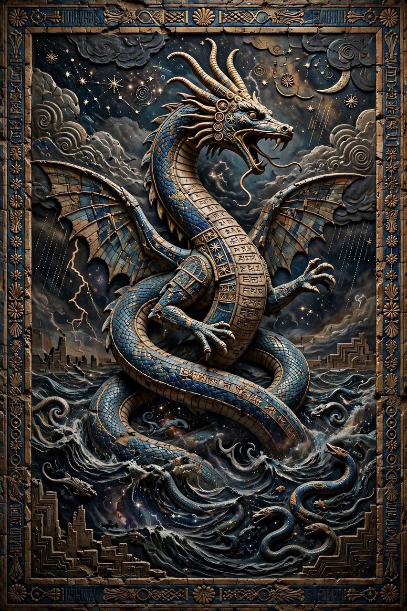

| Personification | The primordial sea (salt water) |
|---|---|
| Consort | Apsu (fresh water) |
| Offspring | The first generations of gods |
| Opponent | Marduk |
| Source | Enūma Eliš |

In Babylonian religion, Tiamat is the primordial goddess of the salt sea, personifying chaos and the undifferentiated waters that existed before creation. She is the central antagonist of the creation epic Enūma Eliš, in which the storm god Marduk defeats her and forms the cosmos from her divided body.
At the beginning of the epic, Tiamat mingles her waters with those of Apsu, the fresh-water deep, and from them the generations of the gods are born. When the younger gods disturb Apsu's rest, he plots to destroy them; the god Ea (Enki) learns of the plot and kills Apsu first. Enraged, Tiamat raises an army of monsters — serpents, dragons, scorpion-men and other horrors — led by her champion Kingu, to whom she gives the Tablet of Destinies.
The gods, unable to face Tiamat, promise kingship to Marduk if he will fight her. Armed with bow, mace, lightning and the four winds, Marduk traps Tiamat in a net, drives an evil wind into her open mouth, and pierces her belly with an arrow. He then splits her corpse in two: from one half he makes the sky, from the other the earth, placing her eyes as the sources of the Tigris and Euphrates.
Tiamat's name is related to the Semitic root for "sea" (compare Hebrew tehom, "the deep", in Genesis 1:2). Her defeat by a storm god parallels other ancient Near Eastern combat myths, and the myth legitimated Marduk's — and Babylon's — supremacy. In modern popular culture Tiamat has been reimagined as a multi-headed dragon, notably in fantasy gaming.
See also: Enki · Anu · Genesis creation narrative